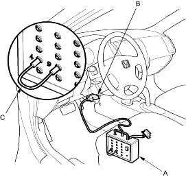

- With the ignition switch OFF, connect the DLC terminal box (A) to the 16P Data Link Connector (DLC) (B) under the driver's side of the dashboard.

- Insert the plugs of the jumper wire (C) to No. 1 and No. 12 plug holes of the DLC terminal box, then push the switch.
- Press the brake pedal.
- Turn the ignition switch ON (II) while continuing to press the brake pedal.
- After the ABS indicator goes off, release the brake pedal.
- After the ABS indicator comes on, press the brake pedal again.
- After the ABS indicator goes off, release the brake pedal.
You cannot clear the DTC unless these conditions are met:
- The vehicle speed is 6 mph (10 km/h) or less.
- The SCS circuit is shorted to body ground before the ignition switch is turned ON (II).
- The brake pedal is pressed before the ignition switch is turned ON (II).
- After a few seconds, the ABS indicator blinks twice and the DTC is cleared. If the indicator does not blink twice, repeat steps 1 thru 7. If the ABS indicator stays on after it blinks twice, check the DTC, because a problem was detected during initial diagnosis before shifting to DTC clearing mode.
- Turn the ignition switch OFF.
- Disconnect the DLC terminal box from the DLC.